БЕСХВОСТЫЕ ЗЕМНОВОДНЫЕ (Anura, или Salientia), отряд позвоночных, вместе с отрядами хвостатых (Caudata) и червяг, или безногих (Gymnophiona), составляющий класс земноводных, или амфибий, в его современном объеме. Амфибии являются переходной эволюционной ступенью между рыбами и рептилиями. Они обитают только в сырых средах, но не обязательно проводят в воде всю жизнь. Для них характерна лишенная чешуи, богатая железами кожа. В отряде бесхвостых ок. 3000 видов. Они довольно разнообразны по размерам – от крошечной красивой квакши (Pseudacris ornata) из Флориды длиной ок. 6 мм до гигантской африканской лягушки-голиафа (Gigantorana goliath) величиной почти с фокстерьера. Также разнообразны их строение, повадки и местообитания. Бесхвостые распространены очень широко – от лежащей ниже уровня моря Долины Смерти в Калифорнии до высоты более 4900 м над уровнем моря в южноамериканских Андах и от субантарктической оконечности Южной Америки до арктической вечной мерзлоты. Они встречаются на всех материках, кроме Антарктиды, и на многих океанических островах, хотя и не могут жить в морской воде. Возможно, они достигли этих островов на естественных плотах из растительных материалов, по существовавшим прежде перешейкам или вместе с человеком. Ископаемые остатки бесхвостых, скелет которых имел вполне современное строение, найдены в отложениях юрского периода, возраст которых ок. 130 млн. лет.
Среди этой группы животных «лягушками» неспециалисты обычно называют более или менее водные формы со стройным туловищем, относительно длинными задними ногами и гладкой кожей, а «жабами» – обитателей суши с толстым телом, сравнительно короткими ногами и бородавчатой кожей, вид которой породил известное суеверие – если подержать жабу в руках, можно заразиться бородавками. Однако существует и много промежуточных форм. При научной классификации отряда ученые выделяют семейства «настоящих лягушек» (Ranidae) и «настоящих жаб» (Bufonidae), которые включают как животных, подходящих под приведенные выше описания, так и не соответствующих им. Дело в том, что пропорции тела, в том числе длина конечностей, и характер кожи у видов каждой группы изменялись в соответствии с условиями обитания. Сейчас некоторые настоящие лягушки живут в норах на суше и походят на жаб, а некоторые настоящие жабы редко покидают воду, поэтому их кожа гладкая, а форма тела почти такая же, как у лягушек.
Бесхвостые амфибии подразделяются на 19 (иногда менее) семейств, из которых уже упоминались Ranidae и Bufonidae. При выделении семейств и установлении степени родства между ними важны особенности скелета животных, включая строение позвонков и способ их сочленения, наличие или отсутствие зубов и форма последних фаланг пальцев задней конечности. Другие характеристики, используемые при классификации и идентификации бесхвостых, – это размеры и структура легких, подошвенных бугорков, барабанных перепонок, наличие или отсутствие пальцевых подушечек, строение языка, кожи и глаз (в том числе форма зрачка), окраска тела.
СКЕЛЕТ ЛЯГУШКИ
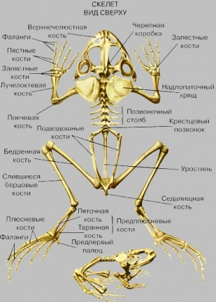
МЫШЦЫ ЛЯГУШКИ
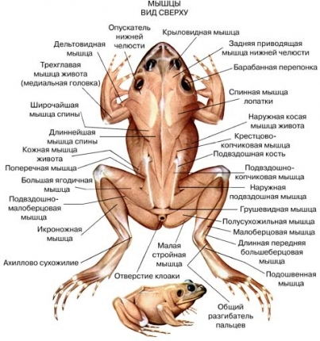
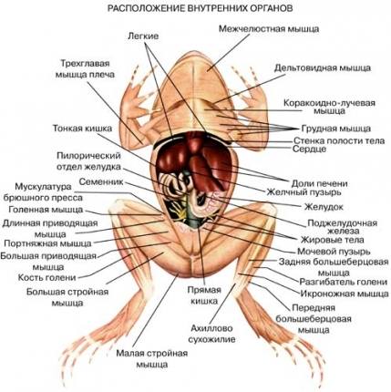
РАСПОЛОЖЕНИЕ ВНУТРЕННИХ ОРГАНОВ ЛЯГУШКИ
Анатомия и физиология.
Кожа служит не только защитным покровом, но и играет важную роль в регуляции температуры тела, водном обмене организма и дыхании. Она богата кровеносными сосудами, а также слизистыми и ядовитыми железами, выделяющими свои продукты на ее поверхность. Слизистые железы поддерживают влажность кожи, способствуют дыханию и охлаждению тела за счет испарения. Выделяемая ими слизь делает лягушку скользкой, что помогает ей ускользать от хищников. Ядовитые (зернистые) железы бывают разбросаны по всей поверхности тела, но чаще располагаются группами, которые сконцентрированы в определенных «стратегически важных» областях. Почти у всех настоящих жаб яд находится не только в «бородавках», но и в паре вздутий на шее – околоушных железах. У некоторых лягушек ядовитые железы идут двумя продольными гребнями по краям спины. Ядовитый секрет – белесое, липкое вещество, которое при попадании в глаза или рот вызывает жжение. У некоторых лягушек яд настолько силен, что может вызвать временный паралич и даже смерть проглотивших некоторое его количество животных, как случается с собаками, хватающими пастью колорадских жаб на юго-западе США и в Мексике.
ОРГАНЫ ВЫДЕЛЕНИЯ И ДЫХАНИЯ ЛЯГУШКИ
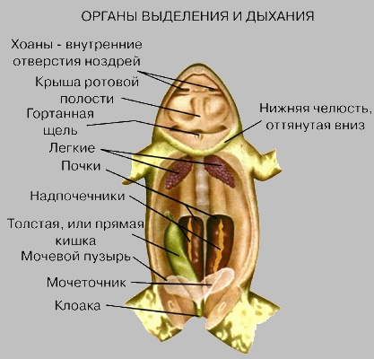
Дыхательная система. И у головастиков, и у взрослых особей важным органом дыхания служит кожа. Головастики, помимо этого, дышат с помощью жабр, а взрослые бесхвостые земноводные – легкими. У самца африканской волосатой лягушки (Astylosternus robustus) с очень маленькими легкими на боках туловища и бедрах в сезон размножения развиваются тонкие выросты кожи с кровеносными сосудами: это увеличивает ее дыхательную поверхность в тот период, когда животные наиболее активны. У сухопутных видов с утолщенной кожей и слабым кожным дыханием (например, жаб), легкие довольно велики. Их вентиляцию у бесхвостых обеспечивают глотательные горловые движения.
КРОВЕНОСНАЯ СИСТЕМА ЛЯГУШКИ
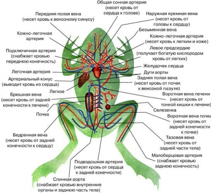
Кровеносная система. Сердце трехкамерное, с двумя предсердиями и одним желудочком. В желудочке обогащенная кислородом кровь, поступающая из легких, смешивается с кровью, оттекающей от остальных частей тела. Однако бесхвостые не зависят полностью от легочного дыхания, и некоторые виды дышат главным образом кожей. В результате к ней и от нее идут крупные кровеносные сосуды. Кровь выталкивается из сердца в артерии и возвращается в него по венам. Клапаны в венах препятствуют обратному току крови. Артериальная система соединяется с венозной множеством мелких сосудов – капилляров, снабжающих ткани питательными веществами и кислородом. Значительная часть крови от задних конечностей по пути к сердцу проходит через воротные вены почек, а затем через почки. Остальная ее часть вместе с кровью от пищеварительного тракта через воротную вену печени поступает в печень, а оттуда идет к сердцу. Воротная вена – это сосуд, соединяющий два капиллярных русла. Как и у других позвоночных, жидкая фракция крови через стенки капилляров просачивается в межклеточные пространства, образуя лимфу. Под кожей бесхвостых находятся крупные лимфатические мешки. В них ток лимфы обеспечивается особыми структурами, т.н. «лимфатическими сердцами». В конце концов лимфа собирается в лимфатические сосуды и возвращается в вены.
ОРГАНЫ ПИЩЕВАРЕНИЯ ЛЯГУШКИ
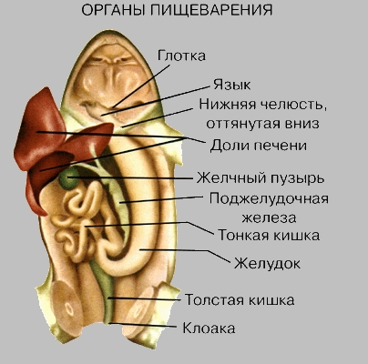
Пищеварительная система. Бесхвостые, которые охотятся на суше, используют для ловли добычи язык, прикрепленный к переднему краю нижней челюсти: его свободный задний конец способен быстро выбрасываться изо рта. Благодаря секрету особой небной железы он постоянно остается клейким. Однако виды, ведущие полностью водный образ жизни, например пиповые (семейство Pipidae), утратили и язык, и эту железу. Они заглатывают корм под водой. Пищеварительный тракт состоит из ротовой полости, пищевода, желудка и кишечника. Значительная часть переваривания и все всасывание пищи осуществляются в кишечнике. В него же открываются протоки печени и поджелудочной железы. Помимо участия в переваривании жиров печень служит местом накопления последних, а также гликогена («животного крахмала»). Осенью, перед началом спячки, главным образом благодаря запасам гликогена, она у бесхвостых может быть в два раза крупнее, чем в начале лета. Жир откладывается также в особых жировых телах, рядом с органами размножения. Поджелудочная железа выделяет щелочной секрет, содержащий пищеварительные ферменты.
Мочеполовая система. Главная функция почек – выведение из организма воды и азотистых отходов, образующихся при расщеплении белков, в виде мочи. Вода, двуокись углерода и некоторые соли выделяются также через кожу. За день лягушка может образовать количество мочи, равное трети веса ее тела. Мочевой пузырь у сухопутных видов служит запасным хранилищем воды, замедляющим высыхание организма.
Сперма у самцов образуется в семенниках. Оттуда она попадает в семявыносящие каналы, проходящие через почки, а затем – в 2 мочеточника, идущих вдоль наружного края почек и впадающих в клоаку. У некоторых видов задний конец каждого мочеточника расширен в семенной пузырек.
Во время размножения икра у самок разрывает яичники и попадает в воронки яйцеводов. Она продвигается по этим трубкам за счет биения ресничек на их внутренних стенках и по пути покрывается выделяемой последними слизью. У некоторых видов икра может в течение некоторого времени накапливаться в расширенном маточном отделе яйцевода. Из него она попадает в клоаку и через ее отверстие выметывается наружу.
ОРГАНЫ РАЗМНОЖЕНИЯ САМЦА ЛЯГУШКИ
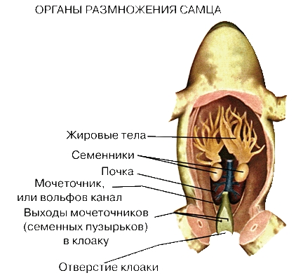
ОРГАНЫ РАЗМНОЖЕНИЯ САМКИ ЛЯГУШКИ
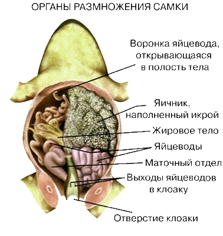
Поведение.
Реакция на температуру и влажность. Лягушки, как и все животные, кроме птиц и млекопитающих, – холоднокровные, или эктотермные, существа. Это означает, что температура их тела зависит от окружающей среды. Тепло, выделяемое их организмом при окислении пищи (дыхании), быстро теряется. Земноводные не могут регулировать температуру своего тела, как теплокровные (эндотермные) животные, однако они чувствуют ее изменения и избегают экстремальных значений, причем некоторые виды (например, жабы) нормально себя чувствуют лишь в достаточно узком температурном интервале. Хотя некоторые виды активны даже при 4° С, другим для активной жизни требуется намного более высокая температура. Немногие виды могут подолгу переносить жару выше 40° С, а большинство избегает температур выше 35° С. В климатических зонах, где земноводные на зиму впадают в спячку, время выхода из нее определяется главным образом потеплением среды.
Для жизненной активности влажность не менее важна, чем температура. Влага поглощается и теряется земноводными через кожу. Они не пьют в обычном смысле этого слова. Если скорость потери воды выше, чем скорость ее поглощения, они высыхают. В экспериментальных условиях некоторые виды, приспособленные к жизни в засушливых районах, выдерживали потерю воды в количестве, равном 40% массы тела. Формы, проводящие почти все время в воде, гораздо более чувствительные к высыханию. Когда земноводные находятся в воде, в поглощении влаги участвует вся поверхность кожи, на суше же – только те ее участки, которые соприкасаются с влажным грунтом или растительностью. Обсохшая лягушка не способна поглощать влагу из воздуха. У видов, обитающих в среде с низкой влажностью, например в пустыне, кожа может быть утолщенной, что ограничивает потери воды. Исключение составляют участки тела, соприкасающиеся с землей, – нижняя сторона задних конечностей и задний конец брюха. У жаб т.н. «седалищный лоскут» тонкой кожи хорошо заметен: возможно, он действует как промокашка, впитывая влагу, когда животное сидит на влажной почве. Некоторые бесхвостые, живущие в районах с редкими осадками, чутко реагируют на дождь. Например, лопатоноги после грозы могут в течение часа выйти из глубоких подземных убежищ и начать размножаться. Давно замечено, что лягушки квакают перед дождем: возможно, это их реакция на повышение влажности воздуха.
Локомоция. Умение бесхвостых прыгать хорошо известно, но это не единственный способ их передвижения. Некоторые виды в основном плавают (пиповые и многие настоящие лягушки), другие передвигаются «шагом» (жабы), многие лазают (например, квакши), а иногда даже планируют (веслоногие лягушки). У древесных форм на кончиках пальцев обычно развиты железистые прикрепительные диски. «Летающим лягушкам» из тропиков Старого Света огромные, перепончатые кисти и стопы позволяют скользить по воздуху подобно планерам. У одного из таких видов, Polypedates malabaricus, длина планирующего полета достигает 9–12 м.
По своей способности прыгать бесхвостые сильно различаются. Замечательны в этом смысле крошечные сверчковые квакши (Acris gryllus) из восточной и средней частей США. Особь длиной менее 2,5 см (не считая ног) может за один прыжок преодолеть расстояние в 90 см. В соревнованиях лягушек-прыгунов в округе Калаверас (шт. Калифорния) несколько лет фаворитом была одна лягушка-бык длиной ок. 18 см, преодолевавшая за один прыжок 120–150 см. Африканские полосатая (Rana fasciata) и острорылая (R. oxyrhynchus) лягушки прыгают в длину на 4,2 м.
При плавании движение обеспечивают задние ноги, а передние вытянуты назад по бокам. Обычно гребки совершают обе ноги одновременно, однако они могут работать и поочередно. У водных видов пальцы соединены перепонками. У самцов в период размножения, когда плавательная активность усиливается, эти перепонки могут разрастаться.
Питание. Все взрослые бесхвостые питаются животными, например насекомыми, червями, рыбой и другими земноводными. Растительные ткани, встречающиеся в их желудках, почти всегда заглатываются случайно. Бесхвостые хорошо видят вблизи и для обнаружения добычи пользуются зрением. Сигналом к нападению обычно служит движение жертвы. У многих видов она схватывается языком, задний конец которого стремительно выбрасывается изо рта. Жертва прилипает к его поверхности.
Голос. Возможно, бесхвостые были первыми наземными позвоночными, использовавшими для связи между собой звуки (вокализацию). У ныне живущих форм главная функция голоса – обеспечить встречу особей разных полов для размножения. Особенно хорошо развита вокализация у самцов, причем каждому виду свойственны свои характерные «песни». В некоторых районах в разгар сезона размножения могут одновременно громко квакать до восьми разных видов. У большинства самцов глотка снабжена мешками-резонаторами для усиления звука. Ее эластичная кожа во время вокализации растягивается сферическим, колбасовидным или уплощенно-овальным пузырем, иногда двумя – по бокам головы.
Жизненный цикл. Типичен жизненный цикл леопардовой лягушки (Rana pipiens). Этот обычный вид встречается от Атлантического побережья США до Каскадных гор на западе Северной Америки и от Лабрадора до Панамы в самых разнообразных местообитаниях. Леопардовая лягушка часто используется как подопытное животное.
Ее размножение в умеренной зоне зависит от широты и высоты над уровнем моря и начинается вскоре после выхода животных из зимней спячки. Его особенности в тропиках изучены мало. Сроки в значительной степени зависят от температуры. Самцы собираются на прудах и издают характерные брачные призывы – низкие гортанные стоны и хрюканье, возникающие при прохождении воздуха через голосовые связки в мешки-резонаторы, расположенные над передними конечностями по бокам головы. Обычно самцы кричат с поверхности воды, но иногда и будучи полностью погруженными в нее. Крики привлекают как самцов, так и самок, и образуются крупные скопления лягушек. Самки откладывают в воду икру, а самцы выпускают на нее сперматозоиды (наружное оплодотворение). Обычно икринки образуют плотные округлые грозди диаметром 76–152 мм. Они откладываются на открытых заболоченных участках у поверхности воды и обычно прикреплены к травинкам или другой растительности. В каждой грозди может быть от 3000 до 6000 икринок. Каждая из них наполовину темная, наполовину светлая. Темный пигмент находится на верхней стороне и, возможно, защищает развивающийся зародыш от избытка солнечной радиации; студенистый чехол икринки предохраняет ее от хищников и микроорганизмов.
Вылупление обычно происходит через две-три недели. Длительность инкубационного периода зависит от температуры. Хвостатые личинки длиной ок. 8 мм, называемые головастиками, некоторое время остаются около студенистых капсул. В этот период они дышат наружными жабрами, а их глаза и рот недоразвиты. С помощью присоски на нижней стороне головы головастик прикрепляется к подводным предметам. До перехода к активному питанию он существует за счет остатков желтка икринки в своем брюхе. Затем перед жабрами развиваются оперкулярные складки, которые разрастаются назад и образуют две сообщающиеся между собой жаберные камеры, которые открываются наружу небольшим отверстием на левой стороне тела. Вода втягивается ртом, проходит через жабры и затем выталкивается наружу через жаберное отверстие. Рот преобразуется в роговой клюв с гребневидными рядами зубцов, которыми головастик соскабливает или откусывает кусочки растений или гниющих остатков животных. На этой стадии важную роль играет растительная пища, в основном водоросли. Постепенно хвостовые плавники увеличиваются, и в определенный момент появляются задние конечности. Передние пока скрыты в жаберных камерах и становятся заметными незадолго до выхода животного на сушу. Первой обычно появляется левая, которая высовывается из жаберного отверстия. Остаток хвоста может некоторое время сохраняться и на суше, но затем полностью рассасывается.
При метаморфозе рот личинок изменяется: увеличивается его отверстие, утрачиваются гребневидные ряды зубцов и губные сосочки, исчезает роговая оболочка челюстей и развиваются конические зубы. Длинный извитой кишечник, приспособленный к перевариванию растительной пищи, укорачивается и становится «плотоядным». К моменту превращения в лягушку длина головастика может достигать 76–102 мм, включая хвост. Продолжительность личиночного периода составляет два-три месяца и в значительной степени зависит от температуры воды. После метаморфоза общая длина лягушонка с остатком хвоста ок. 25 мм, а половая зрелость наступает в возрасте 2–3 лет.
Особенности размножения, икры, личинок и взрослых особей зависят от местообитания вида. Например, хвостатая лягушка (Ascaphus truei) населяет холодные ручьи от северного побережья Калифорнии до Британской Колумбии, и многие ее особенности являются адаптациями к данной среде. Крупная, не пигментированная икра прикрепляется к нижней поверхности камней (икра, откладываемая в темных местах, обычно лишена пигмента). У головастика обтекаемая форма, мощные мышцы хвоста для плавания в быстрой воде и большой рот, при помощи которого он способен присасываться к камням, чтобы его не снесло течением. Вооруженный многими рядами гребневидных зубцов, он работает как пылесос, втягивая органические остатки с поверхности подводных предметов. У взрослой лягушки легкие мелкие – за счет этого уменьшается плавучесть и повышается маневренность в турбулентном потоке воды. Клоака самца открывается на конце напоминающего хвост копулятивного органа, отсутствующего у других бесхвостых. При нересте в быстрых ручьях течение воды может помешать смешиванию икры со спермой, поэтому оплодотворение у этого вида внутреннее.
ЭМБРИОЛОГИЯ ЛЯГУШКИ. Показанное выше эмбриональное развитие лягушки из икры начинается вскоре после оплодотворения и длится две-три недели. Продолжительность инкубации зависит от окружающей температуры.Самки большинства бесхвостых земноводных выметывают икру в воду, где происходит ее наружное оплодотворение самцом. Несколько таксонов откладывает ее во влажные места на суше. Икра разных видов неодинакова по количеству, размерам, строению и типу кладки. У североамериканских видов диаметр икринок составляет от 1 до 5 мм, а количество их от сотен до нескольких тысяч в кладке, причем оно почти не зависит от размера особи. Икринки могут откладываться по отдельности, гроздьями или нитями. Каждая икринка обычно наполовину темная, наполовину светлая. Темная часть находится сверху: это защищает содержимое от солнечных лучей. Если икра откладывается в темных местах, пигментация может отсутствовать. Каждая икринка – это яйцеклетка, окруженная студенистой оболочкой. Последняя бывает разной толщины, набухает, впитывая воду, и служит для защиты икринки, а позднее зародыша от других организмов.Эмбриональное развитие начинается с деления яйцеклетки на две меньшие клетки (1), затем на четыре (2), восемь (3) и т.д. до образования многоклеточной структуры. Клетки образуют шарик с полостью, т.н. бластоцелем. Эта стадия развития называется бластулой (4 и 5).ЭМБРИОЛОГИЯ ЛЯГУШКИ. Показанное выше эмбриональное развитие лягушки из икры начинается вскоре после оплодотворения и длится две-три недели. Продолжительность инкубации зависит от окружающей температуры.Самки большинства бесхвостых земноводных выметывают икру в воду, где происходит ее наружное оплодотворение самцом. Несколько таксонов откладывает ее во влажные места на суше. Икра разных видов неодинакова по количеству, размерам, строению и типу кладки. У североамериканских видов диаметр икринок составляет от 1 до 5 мм, а количество их от сотен до нескольких тысяч в кладке, причем оно почти не зависит от размера особи. Икринки могут откладываться по отдельности, гроздьями или нитями. Каждая икринка обычно наполовину темная, наполовину светлая. Темная часть находится сверху: это защищает содержимое от солнечных лучей. Если икра откладывается в темных местах, пигментация может отсутствовать. Каждая икринка – это яйцеклетка, окруженная студенистой оболочкой. Последняя бывает разной толщины, набухает, впитывая воду, и служит для защиты икринки, а позднее зародыша от других организмов.Эмбриональное развитие начинается с деления яйцеклетки на две меньшие клетки (1), затем на четыре (2), восемь (3) и т.д. до образования многоклеточной структуры. Клетки образуют шарик с полостью, т.н. бластоцелем. Эта стадия развития называется бластулой (4 и 5).
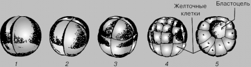
ДРОБЛЕНИЕ КЛЕТОК. Процесс деления на все большее число мелких клеток без заметного роста последних называют дроблением. Клетки бластулы несколько различаются по размерам: более крупные на одном ее полюсе содержат основной запас питательных веществ – желток, который снабжает развивающийся зародыш пищей до его превращения в головастика и перехода на внешний корм. Дробление продолжается, и на поздней стадии бластула состоит из нескольких слоев клеток (6).Дальнейшие изменения называются гаструляцией, так как приводят к образованию гаструлы (7 и 8). Сначала происходит локальное впячивание стенки бластулы – инвагинация. Желтковые клетки перемещаются в ее полость, и бластоцель исчезает. Появляется новая полость, т.н. архентерон – зачаток пищеварительного тракта, открывающийся наружу первичным ртом – бластопором.На стадии поздней гаструлы появляются зачатки нервной системы в виде бороздки и складок ткани с обеих ее сторон (9).ДРОБЛЕНИЕ КЛЕТОК. Процесс деления на все большее число мелких клеток без заметного роста последних называют дроблением. Клетки бластулы несколько различаются по размерам: более крупные на одном ее полюсе содержат основной запас питательных веществ – желток, который снабжает развивающийся зародыш пищей до его превращения в головастика и перехода на внешний корм. Дробление продолжается, и на поздней стадии бластула состоит из нескольких слоев клеток (6).Дальнейшие изменения называются гаструляцией, так как приводят к образованию гаструлы (7 и 8). Сначала происходит локальное впячивание стенки бластулы – инвагинация. Желтковые клетки перемещаются в ее полость, и бластоцель исчезает. Появляется новая полость, т.н. архентерон – зачаток пищеварительного тракта, открывающийся наружу первичным ртом – бластопором.На стадии поздней гаструлы появляются зачатки нервной системы в виде бороздки и складок ткани с обеих ее сторон (9).
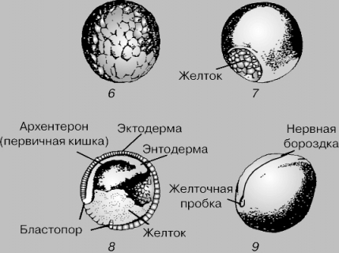
ПОЯВЛЕНИЕ ЗАРОДЫШЕВЫХ СЛОЕВ. Сначала появляются два из трех зародышевых слоев (листков) – эктодерма и энтодерма, между которыми развивается третий – мезодерма. Из этих клеточных слоев образуются все органы и системы взрослого организма. Эктодерма дает внешние покровы (эпидермис) тела, головной и спинной мозг. Из энтодермы развиваются пищеварительная система, различные железы и другие связанные с ними органы. Мезодерма дает начало хорде, предшественнику позвоночника, а также мышечной, кровеносной, выделительной и репродуктивной системам.По окончании стадии гаструлы зародыш, у которого уже намечаются жаберные дуги, начинает приближаться по форме к молодому головастику (10 и 11), вылупляется из икринки и становится личинкой.ПОЯВЛЕНИЕ ЗАРОДЫШЕВЫХ СЛОЕВ. Сначала появляются два из трех зародышевых слоев (листков) – эктодерма и энтодерма, между которыми развивается третий – мезодерма. Из этих клеточных слоев образуются все органы и системы взрослого организма. Эктодерма дает внешние покровы (эпидермис) тела, головной и спинной мозг. Из энтодермы развиваются пищеварительная система, различные железы и другие связанные с ними органы. Мезодерма дает начало хорде, предшественнику позвоночника, а также мышечной, кровеносной, выделительной и репродуктивной системам.По окончании стадии гаструлы зародыш, у которого уже намечаются жаберные дуги, начинает приближаться по форме к молодому головастику (10 и 11), вылупляется из икринки и становится личинкой.
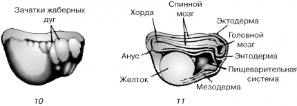
Икра. В зависимости от вида количество, размеры и строение икринок различны. Количество ее в кладке очень слабо зависит от размеров особи. В Северной Америке диаметр икринки варьирует от 1 мм (у сверчковых квакш длиной менее 2,5 см) до 5 мм (у хвостатых лягушек). Толщина ее прозрачной студенистой оболочки различна. Икринки могут откладываться по одной, округлыми гроздьями, слоями или нитями, прикрепляться к растительности или свободно плавать. У большинства видов верхняя сторона икринки пигментирована.
Головастики. Большинство головастиков выглядит так, как показано на цветных вклейках, но бывают и исключения. Выше уже описана живущая в ручьях личинка с большим ртом, приспособленным для всасывания. У других обитателей ручьев на нижней стороне тела может быть диск, которым они прикрепляются ко дну ручья. Головастики многих узкоротых квакш (семейство Microhylidae) находят пищу в поверхностной пленке воды. Своим зонтовидным ртом они собирают скапливающиеся там микроскопические растения и животных. По ротовому отделу и форме хвоста можно судить о том, в быстрой или стоячей воде живут головастики. В первом случае обычно хорошо развиты хвостовые мышцы, а спинной плавник мелкий; во втором – он высокий, заходящий далеко вперед.
Забота о потомстве. Большинство бесхвостых не заботится о своей икре и личинках. Риск их гибели они компенсируют высокой численностью потомства. Например, лягушка-бык из США и Мексики выметывает до 20 000 икринок и оставляет их без присмотра. Однако у некоторых видов наблюдается родительское поведение, варьирующее от охраны икры и личинок до вынашивания последних внутри тела родителей. В целом – чем теснее связь потомства с родителями, тем меньше образуется икры и личинок.
Самец африканской крапчатой роющей лягушки (Pyxicephalus adspersus) охраняет своих головастиков. Крупные размеры (20–25 см в длину), острые зубы и агрессивность делают это животное свирепым противником, нападающим на крупных животных и даже на людей, приблизившихся к его потомству. Пока головастики все вместе питаются у поверхности воды, отец плавает поблизости или среди них, частично высунув наружу голову. Видимо, ему удается отражать нападения цапель, змей и других животных.
Самец южноамериканского листолаза (Phyllobates subpunctatus) не только охраняет икру, откладываемую на сырую почву, но и переносит вылупившихся личинок в воду. Головастики (иногда до 20 особей) заползают на спину отца, располагаются там двумя рядами, головами друг к другу, и приклеиваются веществом, которое, по-видимому, выделяется кожными железами лягушки. Они могут несколько недель жить на родительской спине, питаясь запасами желтка, пока листолаз на найдет подходящий водоем, где сможет оставить потомство. Чтобы освободиться, головастики должны пробыть в воде примерно 10 мин до размягчения клейкого вещества. Это не дает им потеряться при кратковременном попадании лягушки во влажную растительность или мелкие лужицы, где потомство не смогло бы выжить.
Самец ринодермы Дарвина (Rhinoderma darwinii), южноамериканского вида из семейства Rhinodermidae, вынашивает икру и личинок в своем горловом мешке до тех пор, пока лягушата полностью не сформируются.
Возможно, наиболее известный пример родительской заботы наблюдается у суринамской пипы (Pipa pipa), самка которой вынашивает икру в углублениях на спине, где происходит ее развитие вплоть до окончания метаморфоза.
У сумчатой квакши (Gastrotheca marsupata) икра полностью заключена в мешок на спине у взрослой особи, открывающийся наружу лишь небольшим отверстием сзади. В этой сумке у головастиков развивается пара крупных наружных жабр бокаловидной формы.
У живородящей жабы (Nectophrynoides vivipara) из Восточной Африки молодь рождается полностью сформированной. В одной матке может развиваться более сотни личинок. Видимо, они поддерживают связь с тканями матери через тонкие пронизанные сосудами хвостики, которые служат своего рода пуповинами, позволяющими получать кислород из кровеносной системы самки.
Забота о потомстве достигает крайней степени у двух видов т.н. заботливых лягушек - Rheobatrachus silus и R. vitellinus, обитающих на востоке Австралии. Эти виды, описанные соответственно в 1973 и 1984, – единственные известные животные, вынашивающие свое потомство в желудке. Как показали исследования, головастики избегают переваривания, вырабатывая специальное химическое вещество – простагландин Е2, что подавляет выделение материнским желудком кислоты.
Через 7–8 недель полностью сформированные лягушата выползают в рот матери, садятся к ней на язык и с него выпрыгивают в окружающий мир.
Зоологи проявляют большой интерес к этому уникальному способу размножения и видят потенциальную возможность разработать на его основе метод контроля кислотности желудочного сока при лечении язвы, но, к сожалению, R. silus в настоящее время практически вымерла. R. vitellinus еще встречается в небольших количествах в природе; по способу выращивания молоди в желудке эта лягушка нсколько отличается от R. silus.
КВАКШИ и другие древесные лягушки имеют на концах пальцев «присоски» – липкие диски, с помощью которых они ловко лазают по ветвям и даже листьям.
ПРУДОВАЯ ЛЯГУШКА, населяющая пресные воды Европы от Средиземноморья до Скандинавии.
ТРАВЯНАЯ ЛЯГУШКА. Обычная в Европе травяная лягушка способна выживать в очень холодном климате.
Содержание:
БЕСХВОСТЫЕ ЗЕМНОВОДНЫЕ
Анатомия и физиология, Кожа, Дыхательная система, Кровеносная система, Пищеварительная система, Мочеполовая система, Поведение, Реакция на температуру и влажность, Локомоция, Питание, Голос, Жизненный цикл ,Икра, Головастики, Забота о потомстве
© 2001-2009 Онлайн Энциклопедия «Кругосвет»
По всем вопросам обращаться по тел.: +7(903) 457-34-34